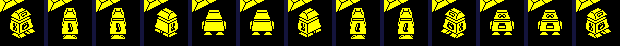
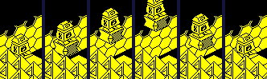
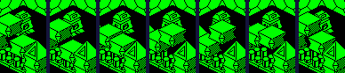
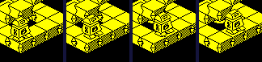
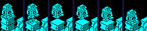
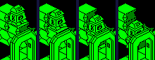
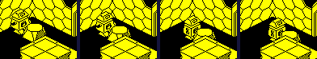
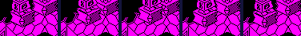

| Alien 8 | How the robot moves and turns |
The robot is Knight Lore's player in a new body: the same controls, the same jump and gravity, the same way of leaving a room, and the collision code of both elder games (Knight Lore's collision page; Pentagram's movement page). What is his own is how he turns -- slowly, through a view in between -- and a slip in the code of that turn which costs him a step every time. This page is about those, about the robot as one box, and about the things in the rooms that carry him.
The robot is records 0 and 1, legs and top. The legs' update routine (PLAYER_LEGS) reads the controls, picks up or puts down, turns, jumps, steps and moves; the top's (TOP_FOLLOWS_LEGS) copies the legs' place, size and flags every turn, sits 12 above them and takes the legs' graphic plus 16. While the legs update, they are made 23 high -- the whole robot -- and the top 0 high, and the top is taken out of the collision tests for the move (PLAYER_LEGS_MOVE); after it the heights go back to 12 and 11. So he moves as one box, but between moves his top is a box of its own that things can land on. Measured: a valve put 56 above him in room $A8 fell and came to rest at Z 87, the top of a robot 23 high standing on the floor at 64.
He faces one of four ways, kept in two bits: bit 2 of the legs' graphic and the mirror bit of their flags (GET_SPRITE_DIR). Knight Lore and Pentagram turn a quarter at once. Alien 8's HANDLE_LEFT_RIGHT instead gives the legs one of four in-between views, graphics 24-27, a count of one in bits 1-2 of +$0D, and the turn's direction in bit 0; while they have one, their update routine is TURNING_LEGS, which counts down for a turn and then gives them the standing graphic of the new facing. So a quarter turn takes three turns: the one it starts on, one counting down, and one ending it. The tables, read from the game:
| Facing | Turning left (TURN_LEFT_VIEWS, TURN_LEFT_ENDS) | Turning right (TURN_RIGHT_VIEWS, TURN_RIGHT_ENDS) |
|---|---|---|
| 0: lower U | 27 mirrored, then 21 mirrored: facing 3 | 24, then 17 mirrored: facing 2 |
| 1: higher U | 26, then 17 mirrored: facing 2 | 25, then 21 mirrored: facing 3 |
| 2: higher V | 24, then 17: facing 0 | 26, then 21: facing 1 |
| 3: lower V | 25, then 21: facing 1 | 27 mirrored, then 17: facing 0 |
Facing 0 walks towards lower U, 1 higher U, 2 higher V and 3 lower V (WALK_STEP_TBL). A left turn goes 0, 3, 1, 2, 0 round. The same view serves both directions between a pair of facings; 27 is 26's drawing, mirrored. The top turns with the legs, 16 graphics up (40-43).

Turn left held from a standstill, the screen at the end of each turn from the one before the key: graphics 21, 26, 26, 17m, 24, 24, 17, 27m, 27m, 21m, 25, 25, 21 (m: mirrored). A quarter turn every three turns.
TURNING_LEGS's last turn means to let him walk on: it enters MOVE_PLAYER at MOVE_IF_WALKING, which steps if bit 2 of C -- walk -- is set. But just before, it calls the footstep sound at FOOTSTEP_NOW, which counts its waves down in C and leaves it zero, and nothing kept BC around the call (the ordinary step, HANDLE_FORWARD, does keep it). So the step is never taken: a robot walking through a turn stands still for three turns, not the two the code was written for, and gravity ignores a held jump that turn.
Measured in the simulator: the robot walking towards higher V in room $A8 (walk held throughout), and turn right held with it for turn 4 only. Then the same with the call taken out -- three NOPs at $C217, so C keeps the controls. U and V at the end of each turn:
| Turn | Graphic | U, V | Graphic, the sound taken out | U, V, the sound taken out |
|---|---|---|---|---|
| 0 | 18 | 116, 83 | 18 | 116, 83 |
| 1 | 19 | 116, 86 | 19 | 116, 86 |
| 2 | 16 | 116, 89 | 16 | 116, 89 |
| 3 | 17 | 116, 92 | 17 | 116, 92 |
| 4 | 26 | 116, 92 | 26 | 116, 92 |
| 5 | 26 | 116, 92 | 26 | 116, 92 |
| 6 | 21 | 116, 92 | 21 | 119, 92 |
| 7 | 22 | 119, 92 | 22 | 122, 92 |
| 8 | 23 | 122, 92 | 23 | 125, 92 |
| 9 | 20 | 125, 92 | 20 | 128, 92 |
| 10 | 21 | 128, 92 | 21 | 131, 92 |
| 11 | 22 | 131, 92 | 22 | 134, 92 |
| 12 | 23 | 134, 92 | 23 | 137, 92 |
| 13 | 20 | 137, 92 | 20 | 140, 92 |
As played, he stands on turns 4, 5, 6; without the call, on 4, 5, and on turn 6 he is already a step along. Every quarter turn made while walking costs one step, 3 units. The fix would be to keep BC around the call, as the ordinary step does; there is no room for it in place. The bug is on the bugs page.
ADJ_FOR_OUT_OF_BOUNDS is Knight Lore's and Pentagram's: the step in Z, then U, then V, each shortened a unit at a time against the floor (64 in every room), the walls (the room's half-sizes about 128, off while he walks in through a doorway or stands in one), and all 56 records; a blocked axis sets a bit of +$0C and the others keep their part, so a move slides along what it meets. Harm passes both ways through bits 5-7 of +$0D, and an obstacle with bit 2 of its flags takes the mover's step, to move by it in its own update. The Z test (ADJ_DZ_FOR_OBJ_INTERSECT) is where the three games differ. A mover with bit 2 in its flags -- the legs, the pushable and moving blocks, the valves -- gives the obstacle its own Z step and, on any axis where its own step is zero, takes the obstacle's: that is how everything that carries him works. And if the mover is one of graphics 16 to 47 -- the robot, the pushable blocks, the lifts -- the obstacle gets bit 3 of +$0D, landed on, which the lift and the collapsing and dropping blocks read. Knight Lore marks everything met and passes no Z step; Pentagram passes it and marks everything. Something standing on the floor is stopped in Z every turn: that is what standing is.
Each row below is ADJ_FOR_OUT_OF_BOUNDS run in a simulator when this page was built, on a mover in record 0 and the others from record 4, every other record empty, in a room 64 either way from its middle. Steps are (U, V, Z), with gravity already taken off.
| Situation | Step asked | Step allowed | And |
|---|---|---|---|
| Walking diagonally into a block | (3, 3, -2) | (0, 3, 0) | stopped in U, Z (+$0C bits 0, 2) |
| Walking into the wall at U 192 (a full-sized room) | (3, 0, -2) | (2, 0, 0) | stopped in U, Z (+$0C bits 0, 2) |
| Falling onto a block from 3 above it | (0, 0, -5) | (0, 0, -3) | stopped in Z (+$0C bit 2); the block: its step becomes (0, 0, -5), +$0D bit 3: landed on |
| Walking into a block that can be pushed (graphic 28, flags bit 2) | (3, 0, -2) | (1, 0, 0) | stopped in U, Z (+$0C bits 0, 2); the block: its step becomes (3, 0, 0) |
| Standing on a conveyor (graphic 68, its step 2 in V) | (0, 0, -2) | (0, 2, 0) | stopped in Z (+$0C bit 2); the conveyor: its step becomes (0, 2, -2), +$0D bit 3: landed on |
| Walking along a conveyor, the other way | (0, -3, -2) | (0, -3, 0) | stopped in Z (+$0C bit 2); the conveyor: its step becomes (0, 2, -2), +$0D bit 3: landed on |
| Landing on a collapsing block (graphic 45) | (0, 0, -2) | (0, 0, -1) | stopped in Z (+$0C bit 2); the block: its step becomes (0, 0, -2), +$0D bit 3: landed on |
| A pushable block (graphic 28) landing on a collapsing block | (0, 0, -2) | (0, 0, -1) | stopped in Z (+$0C bit 2); the block: its step becomes (0, 0, -2), +$0D bit 3: landed on |
| A valve (graphic 96) landing on a collapsing block | (0, 0, -2) | (0, 0, -1) | stopped in Z (+$0C bit 2); the block: its step becomes (0, 0, -2) |
| A lift (graphic 47) rising 2 into him from below | (0, 0, 2) | (0, 0, 1) | stopped in Z (+$0C bit 2); the robot: its step becomes (0, 0, 2), +$0D bit 3: landed on |
| Walking into something deadly (+$0D = $A0) | (3, 0, -2) | (0, 0, 0) | stopped in U, Z (+$0C bits 0, 2); the mover is killed (+$0D bit 6) |
| Something deadly walking into him | (-3, 0, -1) | (0, 0, 0) | stopped in U, Z (+$0C bits 0, 2); the robot: its step becomes (-3, 0, 0), killed |
The update routines of the room's moving blocks, by the graphics UPDATES gives them and the rooms that place them (read from the room data when this page was built). The creatures, the mice and the things that drop are on the page about the dangers.
| Routine | Graphics | What it does | Where |
|---|---|---|---|
| LIFT | 31, 47 | The lift: waits until the robot (or a moving block) lands on it, rises to LIFT_TOP -- two a turn by its code, but it hands its step to what it lifts, which then rises by that less its own fall -- comes down a unit a turn, and waits again. The bobbing block enters at BOBBER and never waits. | 15 rooms, from $1D, $23, $34, $36, $39, $43, $4A, $54, $86, $93, $A6, $B9, $C6, $D6 ... |
| CONVEYOR_PLUS_V | 68 | The conveyors, one routine for all four directions: set their own step, two units a turn, and never move; what lands on them takes the step. | rooms $0D, $1A, $23, $54, $5B, $76, $C9, $F7 |
| COLLAPSING_BLOCK | 45 | Collapses when the robot or a moving block lands on it (+$0D bit 3): graphics 64 and 65 and gone. Rebuilding the room brings it back. | 38 rooms, from $02, $12, $15, $1B, $20, $27, $2F, $31, $3B, $3E, $3F, $40, $43, $44 ... |
| DROPPING_BLOCK | 44 | Sinks a unit a turn while the robot or a moving block stands on it. | rooms $12, $82, $95, $9C, $A4, $AB, $B5, $B9, $F7 |
| PUSHABLE | 28 | Takes the step of whatever pushes it, moves once by it, falls. | 19 rooms, from $0A, $1C, $28, $41, $44, $49, $4B, $61, $62, $6B, $7A, $8C, $96, $99 ... |
| PUSHABLE_INVERTED | 29 | As PUSHABLE, drawn upside down. | rooms $0A, $1C, $37, $41, $4B, $61, $62, $7A, $82, $8C, $99, $BA, $C8 |
| SHUTTLE_U | 66 | Shuttles along U, a unit a turn over 16 units, by the turn counter. Knight Lore's. | rooms $3C, $61 |
| SHUTTLE_V | 67 | The same along V, through the same code (SHUTTLE_BLOCK). | rooms $30, $4F, $61, $F7 |
A lift and a bobbing block share one top, LIFT_TOP: the room builder clears it and the first of them updated sets it -- a lift to its own Z plus 48, a bobbing block to its own Z -- and every other in the room turns back there. No room has both kinds.
Each is a real room, entered by the game's own restart in a simulator when this page was built, with the robot then put on top of the object (or beside it) by writing his position into both his records, and the game left to run a turn at a time. Nothing else was touched but his lives, topped up each turn.
| Situation | What happened |
|---|---|
| He is put on a lift (room $23) | it rises from turn 4, 1 a turn with him on top, to Z 113, one past LIFT_TOP (112, its first Z + 48), then comes back down 1 a turn with him to the floor, reached on turn 102, and starts again; the room's other lift, left alone, never moves |
| The bobbing blocks (room $36), left alone | LIFT_TOP 100, the first one's own Z: each falls a unit a turn to Z 76, where it lands, and rises to 102; its Z every sixth turn: 83, 77, 84, 96, 99, 93, 87, 81, 76 |
| He is put on a conveyor, graphic 68 (room $0D) | his V every other turn: 104, 106, 110, 114, 118, 122 -- two units a turn in V, the conveyor's own step, which he takes because he has none |
| He is put on a collapsing block (room $12) | graphics 45, 65, 0 from the turn he lands, a turn each, and he falls: his Z 138, 136, 136, 136, 134, 130, 124 |
| He is put on a dropping block (room $82) | its Z every fourth turn: 100, 97, 93, 89, 85, 81, 77 -- a unit a turn while he is on it |
| He walks into a pushable block (room $28) | its U: 88, 91, 91, 94, 94, 97, 97, 100, 100, 103, 103, 106, 106, 109, 109; his: 72, 74, 77, 77, 80, 80, 83, 83, 86, 86, 89, 89, 92, 92, 95 -- the turn he walks into it he is stopped and it is given his step, which it moves by in its own update; then he has room to walk again |
| He is put on a shuttling block, graphic 67 (room $30) | its V every fourth turn: 155, 159, 163, 167, 164, 160, 156, 152, 155; his: 155, 158, 162, 166, 166, 162, 158, 154, 154 -- carried, a turn behind |

The lift in room $23 with him on it, at turns 3, 20, 36, 52, 77, 102: rising, at the top, coming down.

A bobbing block in room $36, every sixth turn, the robot out of the way.

Standing on the conveyor (graphic 68) in room $0D, at turns 1, 4, 7 and 10.

The collapsing block in room $12, a turn each from the turn he is put on it.

The dropping block in room $82 with him on it, at turns 1, 8, 16 and 24.

Walking into the pushable block (graphic 28) in room $28, at turns 1, 5, 10 and 14.

Riding a shuttling block (graphic 67) in room $30, every eighth turn.